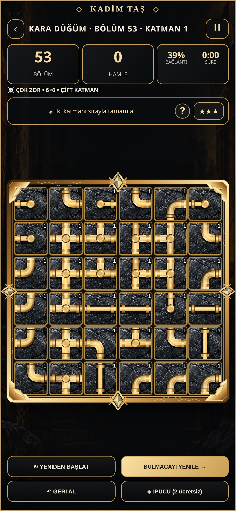
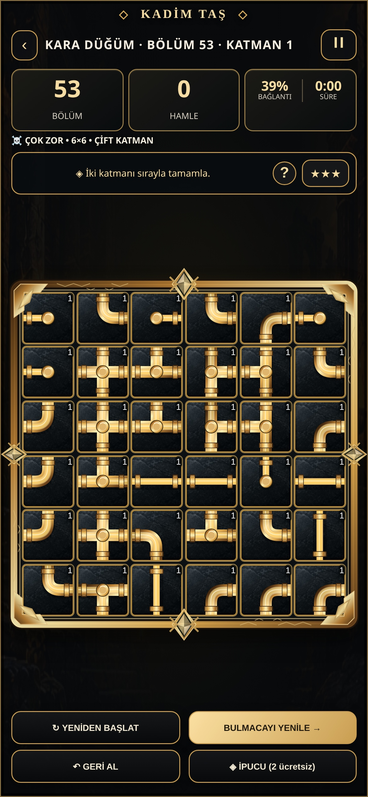
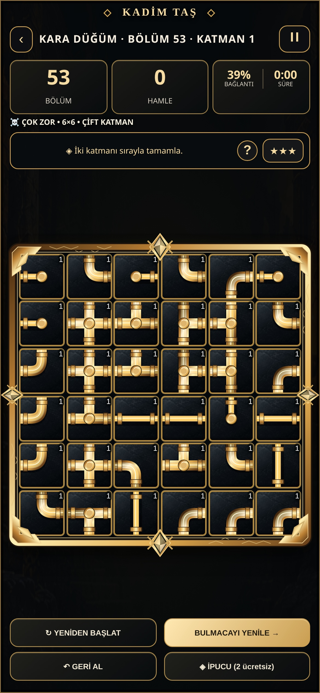

Bölüm 53 · 6×6 · Aynı düğümler, yönler, hamleler, kayıtlar ve buton konumları. Gerçek oyun ekranları, 3× piksel yoğunluğu.
6.50 kaynak görünümü; değişiklik yok.

Onaylanan temel: sakin obsidyen ve metal kenarlar.

Daha koyu obsidyen, belirgin altın ve kontrollü yansımalar.

Son tasarım önizlemedir; main’e alınmadı. Görseli açarak tam boy inceleyebilirsin. Tahta yakın görünümü · Işık ve hareket örnekleri